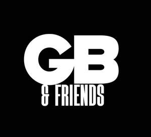

Trade Mark Journal No.2025/048 28 November 2025
UK00004283885 26 October 2025 (25,35,41,43)

- Class 25
- Clothing; sportswear; leisurewear; activewear; gym clothing; athleisure apparel; running apparel; training apparel; yoga clothing; performance wear (clothing); tracksuits; jogging bottoms; sweatshirts; hoodies; T-shirts; long-sleeved tops; tank tops; polo shirts; compression tops; compression leggings; base layers; thermal tops and bottoms; cycling shorts; shorts; vests; leggings; outerwear; jackets; gilets; fleeces; windbreakers; rain jackets; coats; underwear; sports bras; socks; wristbands [clothing]; headbands [clothing]; caps; beanies; hats; visors; gloves [clothing] ; scarves; footwear; trainers; sneakers; slides; sandals; flip-flops; boots; headgear for wear; casual wear; lifestyle and fashion-inspired apparel and accessories, namely belts, wristbands, and headwear.
- Class 35
- Retail and online store services connected with the sale of clothing, footwear, headgear, gymwear, activewear, sportswear, fashion accessories; marketing, advertising, and promotional services; organisation and management of marketing campaigns, collaborations, and brand partnerships; promotion of fitness, community, and lifestyle events; provision of business information and consultancy relating to marketing and brand development; business management of retail outlets and event merchandising operations; all of the aforesaid services excluding financial, insurance, or real-estate business.
- Class 41
- Organisation, provision, and hosting of fitness classes, group exercise sessions, running clubs, and wellness workshops (education); arranging and conducting physical training, boot camps, and person development activities; organisation of community, cultural, and recreational events; provision of information and advice relating to health, fitness, and wellbeing (education); organisation of lifestyle, cultural, and wellness retreats; educational services relating to fitness, nutrition, and mental wellbeing; production and presentation of social, cultural, and recreational activities; entertainment and social club services; development and delivery of community programmes promoting active lifestyles and social connection; all of the aforesaid services excluding the provision of food, drink, or hospitality services.
- Class 43
- Provision and organisation of hospitality services; coordination of catering, brunches, pop-up dining experiences, and post-run refreshments; event planning and management of venues and spaces for social interaction; booking and arrangement of restaurants, bars, and outdoor locations for community or wellness events; provision of information and advice relating to venues, hospitality experiences, and social gatherings; coordination of partnerships with food and beverage suppliers for branded events; creation and promotion of dining and social experiences; arrangement of retreat accommodation and hospitality logistics; all of the aforesaid services excluding the direct preparation or manufacture of food and drink.
JOHN OLUKAYODE GBENGA SALU